Figure 1.(a) Naive meta-agent search drifts along a few local lineages in a space that has no coordinates. (b) Harness-MAP factorizes every candidate into structure and token coordinates, partitions that space into Voronoi cells, and sub-splits the cells with high fitness variance as the search proceeds. (c) On SpatialWorld-3DGames the k₀ = 4 run reaches 100% task success within 40 evaluations; Meta-Harness ends at 68.6% after 50.
SpatialWorld-3DGames
10.7%→100.0%
task success, 39 harness evaluations
BALROG-MiniHack
10.0%→90.0%
task success, 41 harness evaluations
SimWorld-Robotics
32.5%→46.5%
subtask success, 6 harness evaluations
The policy model is a frozen Qwen3-VL-30B-A3B-Instruct in every case. Only the harness changes.
Abstract
Automating harness evolution via naive meta-agent search is prohibitively expensive, requiring hundreds of meta-agent calls and minutes-to-hours per evaluation. How can we efficiently search for a diverse set of high-quality harnesses under a tight evaluation budget?
To address this, we introduce Harness-MAP to structure the search space, factorizing graph-level program structures from token-level implementations. Bilevel search over this structure-token representation space illuminates an archive of diverse, high-quality harnesses. The map also enables a resolution-adaptive search strategy that navigates this space efficiently, sub-splitting partitions with high fitness variance while retracting ineffective refinements. Across three interactive spatial navigation benchmarks with the frozen Qwen3-VL-30B-A3B-Instruct backbone model, our search approach rapidly achieves performance leaps under minimal evaluation budgets: 10.7% → 100.0% on SpatialWorld-3DGames (39 evals), 10.0% → 90.0% on BALROG-MiniHack (41 evals), and 32.5% → 46.5% on SimWorld-Robotics (6 evals). Harness-MAP outperforms prior harness evolution methods across both search and held-out tasks, establishing factorized representations as an effective Quality-Diversity paradigm for budget-aware agent harness search.
Method
A map instead of a lineage
What turns a frozen model into an agent is its harness: the prompts it reads, the tools it may call, the memory it keeps, and the control flow that connects them. Letting an LLM meta-agent rewrite the harness from execution feedback works, but a naive loop is expensive. A single candidate evaluation takes 7.8 minutes on 40 episodes of BALROG-MiniHack and 10.7 hours on 50 episodes of SimWorld-Robotics-Hard, and in a space with no coordinates a search step has no size and a trajectory has no coverage. Harness-MAP gives every harness coordinates, keeps an archive of elites across the resulting map, and spends its evaluation budget where finer resolution has been shown to pay off.
1. A harness gets coordinates
Every candidate is factorized as H = (s, θ), a structural skeleton and a token-level implementation, with the joint descriptor φ(H) = (φS(s); φT(θ)). The structural descriptor encodes the harness's component graph: top-level functions, classes and modules are vertices with deterministic role labels (perception, controller, memory, policy, …) and call, reference and import dependencies are edges. Two rounds of Weisfeiler–Lehman refinement hash each vertex's role-aware neighbourhood, and φS is the normalized histogram of those hashes, so renaming functions or splitting files leaves the coordinate unchanged while adding a perception module moves it. The token descriptor concatenates three standardized blocks, AST control-flow statistics, numeric constants and an embedding of the documentation text, each scaled by 1/√dim so that no block dominates distances. One k-means over the descriptors of a corpus of harness variants yields a Centroidal Voronoi Tessellation with k₀ cells (CVT-MAP-Elites); a candidate is placed by nearest centroid, which reads only its source and costs no evaluation.
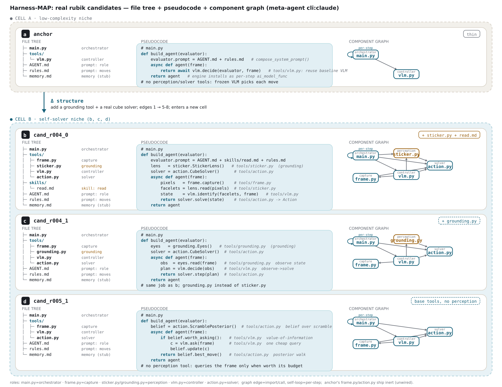
Figure 2. Four candidates from a Rubik's-cube run. The anchor a calls the frozen VLM once per step. b adds a sticker lens and a cube solver, a structural change that moves it from cell A to cell B. c keeps b's component graph and changes only the implementation, so it stays in cell B. d changes both structure and tokens and still lands closest to cell B.
2. Searching over the map
Standard CVT-MAP-Elites mutates blindly; standard harness-evolution loops (propose, evaluate, diagnose, refine) have no spatial coverage. Harness-MAP runs the LLM-guided loop across the archive. The five shaded operations in the paper's Algorithm 1 are each a headless, tool-using session over a candidate directory with its own skill specification:
meta-agentCoverage-gated initializationThe proposer is pointed at empty cells, with the centroid delta to an occupied cell verbalized as a structural or token-level direction, until ⌈m·k₀⌉ cells hold an evaluated founder (m = 50%).
mapSelect P cell elitesEach generation breeds from P = ⌈log₂ k₀⌉ elites, cycling through the occupied cells so that every region keeps getting mutation chances.
meta-agentDiagnoseA diagnostician reads the parent's code and episode traces end to end and names the binding constraint: a harness bug to fix, a model ceiling to scaffold, or a task gap that needs a goal-directed lever.
meta-agentDirective-steered variationEach of the C children gets a target in the map plus a design axis (spatial grounding, action planning, verification and recovery, efficiency, observation parsing), so siblings diverge by construction. The proposer makes one axis-distinct edit under a fixed harness skeleton.
meta-agentValidity filteringA child must keep the entry-point contract and pass an adversarial anti-cheat judge that rules on the mechanism in its code and traces, never on the score. A FAIL verdict removes it from selection.
mapEvaluate, archive, adaptThe child is scored on the search split, placed in its nearest cell, and kept if it is the cell's best. Then the map's resolution adapts.
The evaluation budget is counted explicitly, so every method in the paper is compared at the same number of candidate evaluations:
N = ⌈m·k₀⌉ + G · P · C
G generations, P parents per generation, C children per parent. Initialization is step T = 0 for every method; a Harness-MAP step spends P·C evaluations.
3. Adaptive resolution
A fixed grid wastes evaluations on uniform cells and lumps distinct candidates together in high-variance ones. At the end of each step, Harness-MAP picks the single occupied cell with the largest internal fitness range and sub-splits it with a local CVT. The sub-split is kept only if a child cell's elite beats the pre-split elite; otherwise it is reverted, and the parent cell logs its fitness distribution so it is not re-split until a new candidate changes it.
Centroids are fit on cached descriptors, so resolution adapts at zero evaluation cost: budget concentrates where finer cells have produced quality gains, while flat or saturated regions keep a coarse cell. In the paper's BALROG runs every major breakthrough came from a newly subdivided cell, and the archive grows incrementally rather than exponentially.
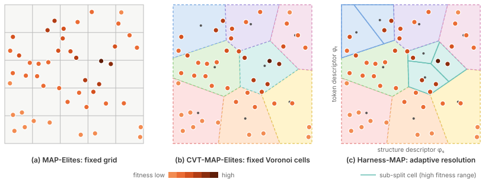
Figure 5. Archive partitioning in (a) MAP-Elites, (b) CVT-MAP-Elites and (c) Harness-MAP, which sub-splits the cells whose members' fitness spreads the most.
Interactive
Adaptive resolution, one step at a time
A toy fitness landscape stands in for task success, and dots are evaluated candidates placed by their coordinates (darker is fitter; ringed dots are cell elites). Each step does what the paper's Algorithm 2 does: pick the occupied cell with the largest fitness range, sub-split it with a local 2-centroid CVT, breed one child from each new cell's elite, then keep the split if a child cell's elite beats the pre-split elite and revert it otherwise. Click anywhere on the map to propose a candidate of your own.
cells6
evaluations spent20
best fitness–
cell
members
elite
range
remembered
Results
Budget-matched comparison on three benchmarks
Every search method starts from the same reference harness and the same frozen policy model, Qwen3-VL-30B-A3B-Instruct served with vLLM, and gets the same number of candidate evaluations: N = 50 on SpatialWorld-3DGames and BALROG-MiniHack, N = 16 on SimWorld-MMNav. The meta-agent for the main results is claude-opus-5 through the Claude Code CLI; gpt-5.6-sol through the Codex CLI is used to check backbone robustness. Harness-MAP uses a 50% coverage-initialization ratio and sweeps the initial resolution k₀.
Table 1. Success rates under the budget-matched protocol. BALROG numbers carry the standard error over 40 episodes.
Method
SpatialWorld-3DGames SR %
SimWorld-MMNav easy Subtask SR %
SimWorld-MMNav hard Subtask SR %
BALROG-MiniHack SR %
Direct inference
GPT-4o
–
33.1
34.4
10.0 ± 4.7
GPT-5
36.4
–
–
20.3 ± 7.3
Qwen2.5-VL-72B-Instruct
7.6
23.8
23.9
5.0 ± 3.4
Qwen3-VL-30B-Instruct
10.7
32.0
29.0
10.0 ± 4.7
Harness search at budget N = 50 / 16 / 16 / 50
Meta-Harness
68.6
39.0
46.0
75.0 ± 6.8
GEPA
18.6
41.0
34.0
30.0 ± 7.2
DGM
34.6
40.0
38.5
72.5 ± 7.1
ShinkaEvolve
60.6
40.5
39.0
20.0 ± 6.3
OpenEvolve
21.2
36.5
37.0
27.5 ± 7.1
Harness-MAP (ours)
100.0
46.5
55.5
90.0 ± 4.7
Harness-MAP leads on every benchmark: a perfect 100.0% on the 3D games against 68.6% for the strongest baseline, 90.0% on MiniHack against 75.0%, and the best subtask success on both navigation settings. The harnesses it finds around a 30B model also pass unevolved frontier backbones, such as GPT-5 at 36.4% on the 3D games.
Sample efficiency in evaluations and in sequential steps
Under the budget-matched protocol the gains arrive early. On SpatialWorld-3DGames the k₀ = 4 run scores 71.0% at N = 10, above Meta-Harness's full-budget 68.6%, and reaches 100.0% by N = 40. On BALROG-MiniHack the k₀ = 2 run matches Meta-Harness's final 75.0% at N = 20, and k₀ = 16 reaches 90.0% at N = 50. Coverage-gated initialization alone frequently finds a saturating harness before the first search step, and the adaptive archive keeps improving across budget increments where the baselines plateau.
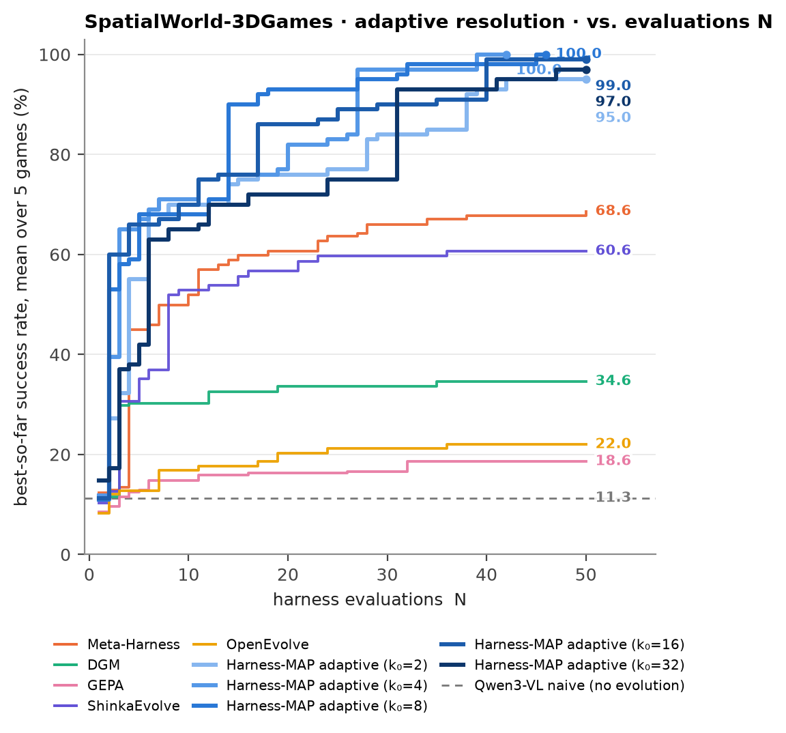
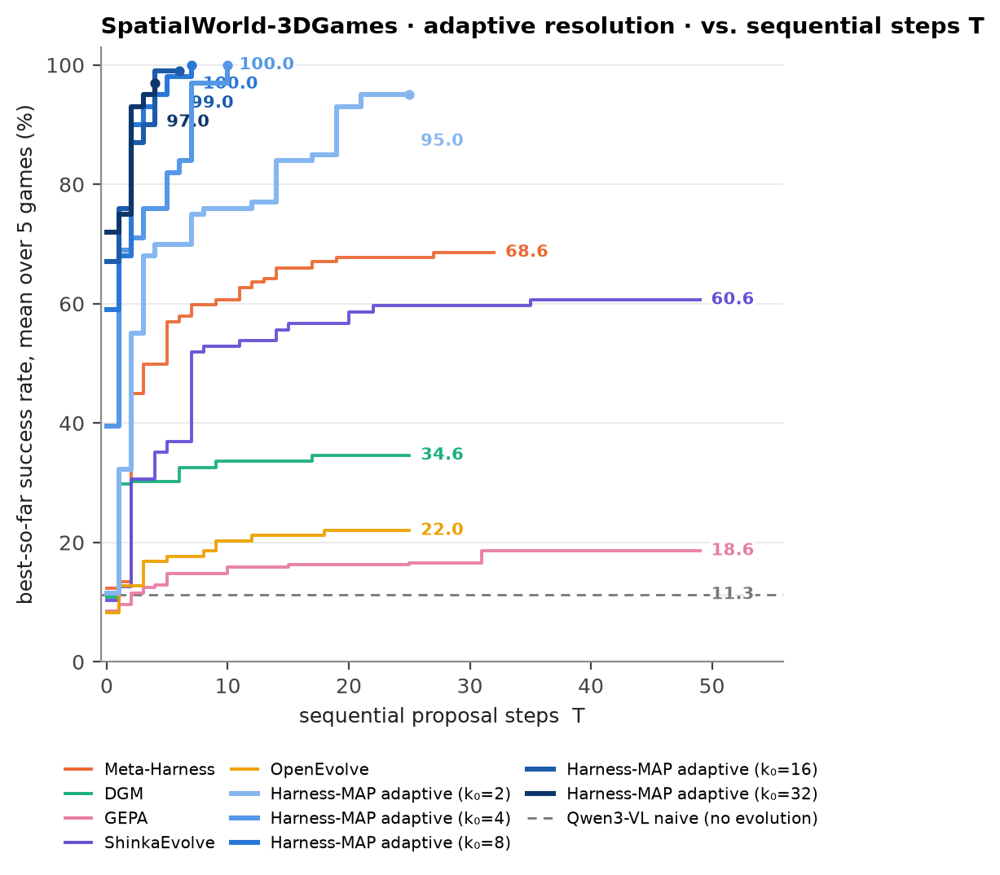
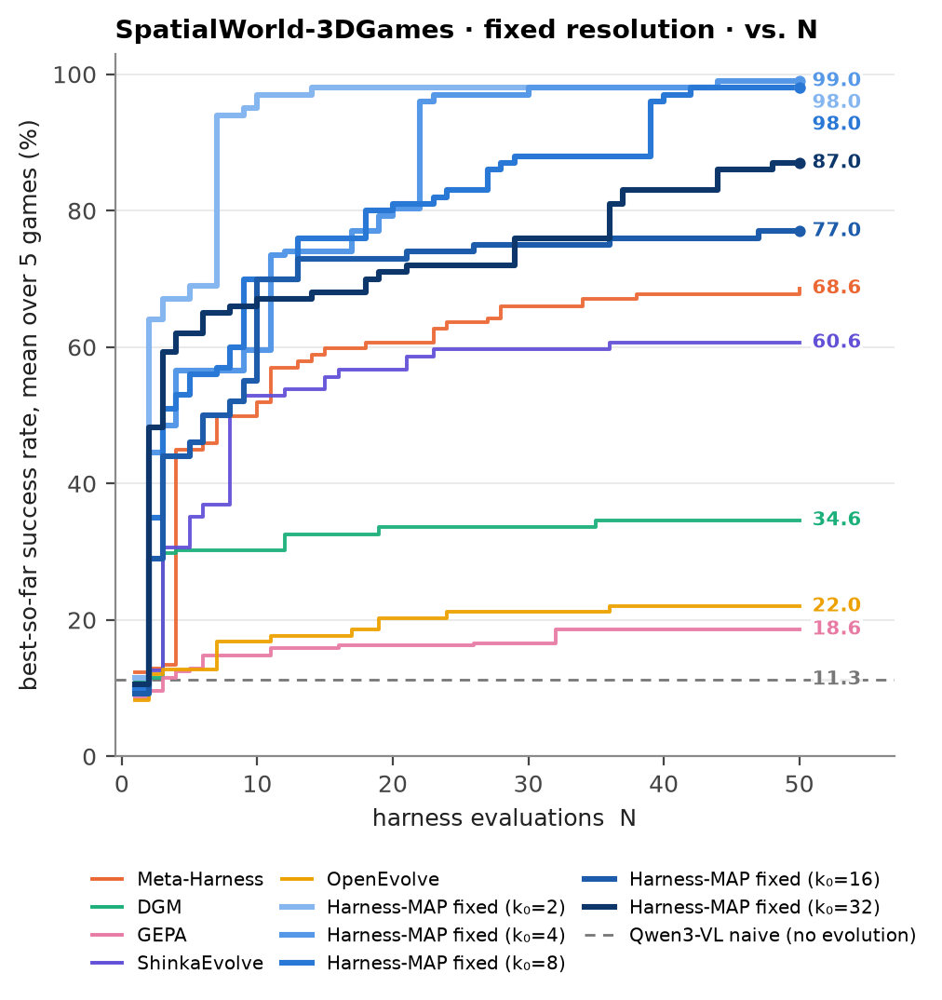
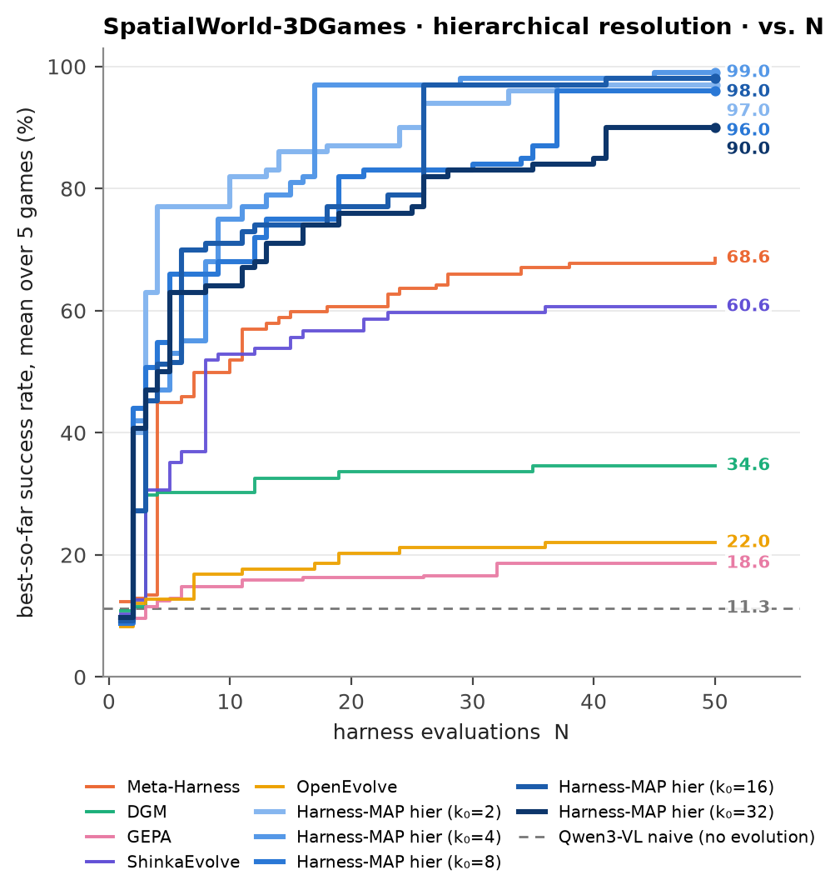
Figure 3a. SpatialWorld-3DGames, success averaged over the five games. Blues are Harness-MAP at initial resolutions k₀ = 2 to 32: adaptive resolution against N and against T (top), fixed and hierarchical resolution against N (bottom). Curves are rebuilt from the per-evaluation logs released with the code; the fixed and hierarchical endpoints at k₀ = 16 and 32 sit one point below the paper's Table 8, whose final cells were re-seeded after these logs were archived.
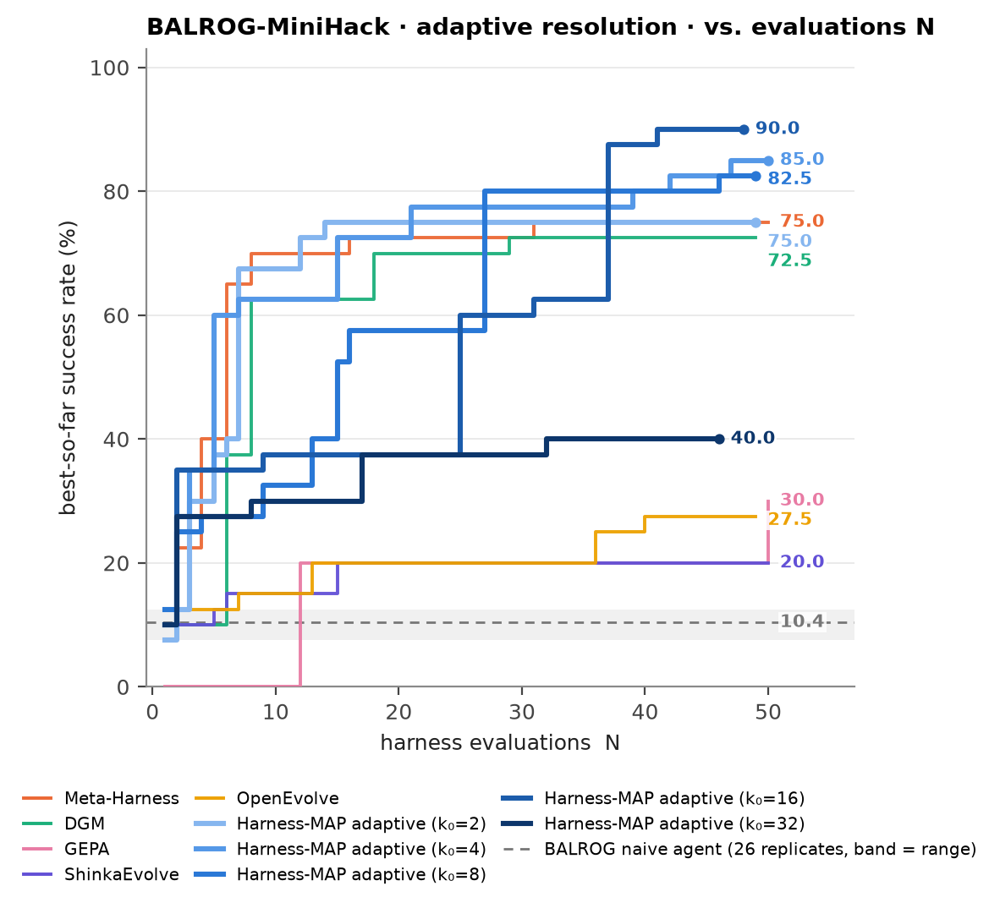
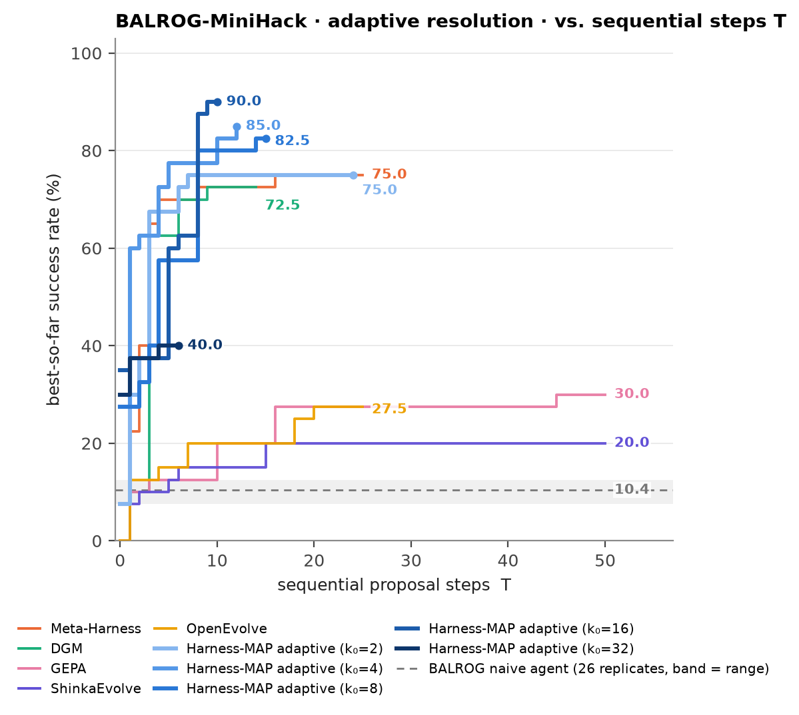
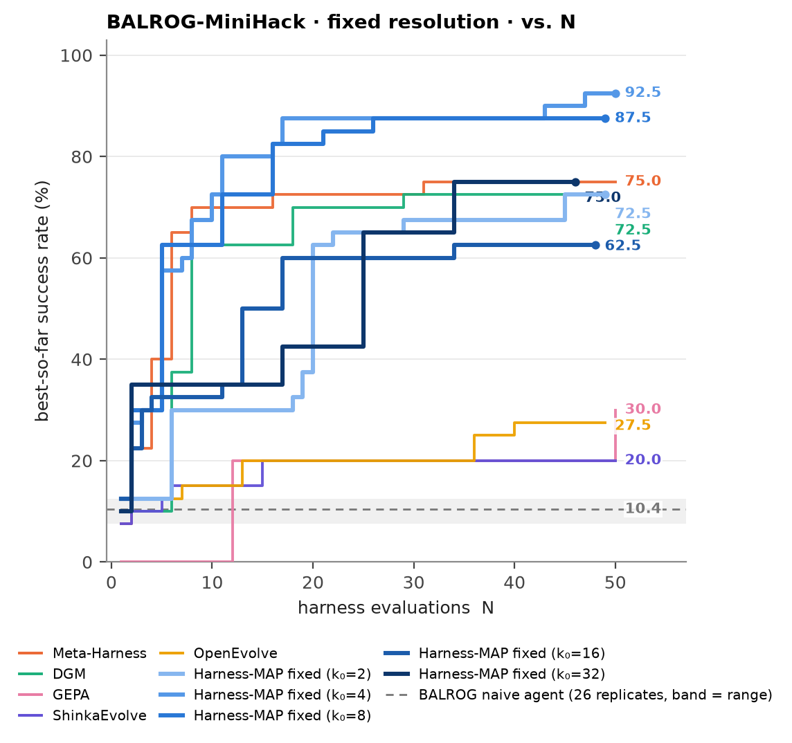
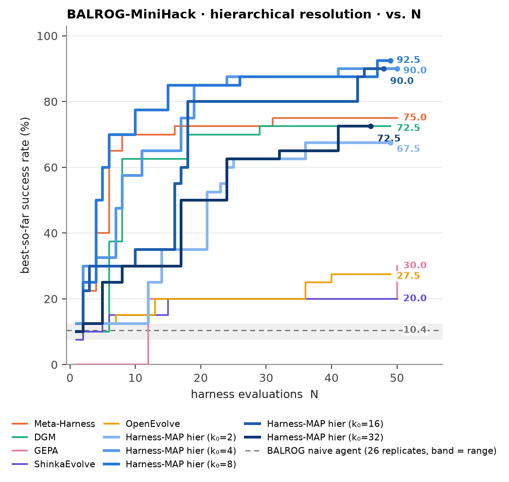
Figure 3b. BALROG-MiniHack, success over the 40 search episodes. The grey band is the range of the unevolved naive agent across 26 replicate evaluations, the honest noise floor for a single run.
Resolution: sensitivity to k₀ and the adaptive mechanism
Cell count decides budget allocation. Too few cells reduce archive diversity; too many slow cell rotation and dilute the budget. Moderate initial resolutions win: k₀ ∈ {4, 8} reach 100.0% on the 3D games with every k₀ between 95.0% and 100.0%, and k₀ = 16 peaks at 90.0% on MiniHack, where k₀ = 32 drops to 40.0% under the same 50-evaluation budget. Across every k₀, the adaptive mechanism matches or beats the fixed and hierarchical variants on the 3D games: it refines the map incrementally, suppresses unhelpful sub-splits on simple landscapes such as Block3D, and deepens granularity on Maze3D and Rubik where quality gains are verified.
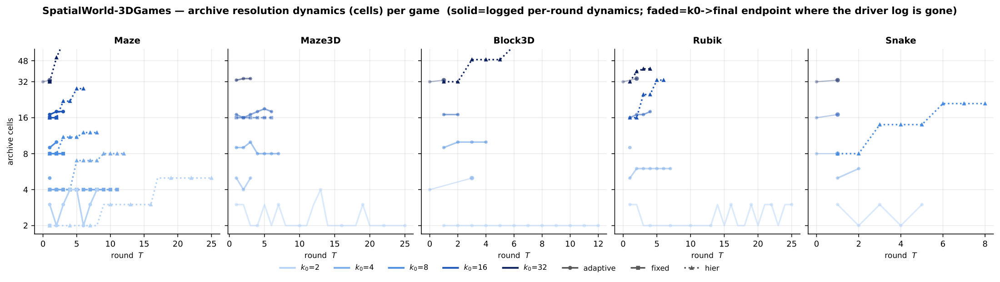
Figure 4. Archive resolution against sequential steps on the five 3D games. Fixed resolution stays flat; the hierarchical schedule doubles whether or not the archive warrants it; adaptive resolution grows where sub-splits pay off and retreats where they do not.
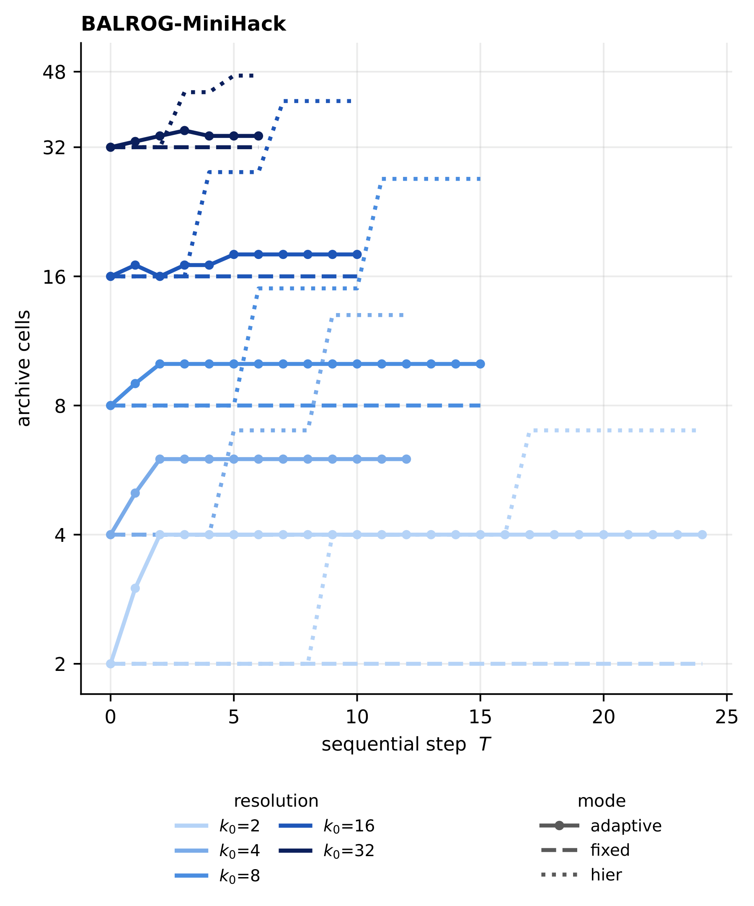
Figure 8. Archive resolution dynamics on BALROG-MiniHack. The adaptive runs add a handful of cells early and then hold, while the hierarchical ladder keeps multiplying cells.
The map illuminates more of the space
To compare search methods with quality-diversity metrics, every candidate each method proposed on SpatialWorld-3DGames is embedded offline into the same structure-token descriptor space and mapped onto the k₀ Voronoi cells. As the grid gets finer, the baselines' local edits cover a collapsing fraction of cells, while Harness-MAP keeps coverage above 50% at every resolution and its QD-score keeps scaling.
Table 2. QD-score (and coverage %) on SpatialWorld-3DGames across initial map resolutions k₀.
Method
k₀ = 2
k₀ = 4
k₀ = 8
k₀ = 16
k₀ = 32
Baselines
Meta-Harness
0.93 (100%)
1.30 (70%)
1.46 (45%)
2.27 (32%)
2.20 (16%)
DGM
0.96 (100%)
1.48 (70%)
1.62 (45%)
2.14 (29%)
1.97 (12%)
GEPA
0.43 (100%)
0.49 (70%)
0.70 (57%)
0.83 (32%)
1.15 (21%)
ShinkaEvolve
0.36 (90%)
0.36 (50%)
0.46 (30%)
0.46 (20%)
0.46 (8%)
OpenEvolve
0.27 (90%)
0.29 (55%)
0.29 (25%)
0.29 (15%)
0.29 (9%)
Harness-MAP
adaptive
1.16 (100%)
1.48 (70%)
2.43 (64%)
3.51 (58%)
7.25 (57%)
fixed
1.15 (100%)
1.40 (65%)
2.38 (55%)
3.23 (52%)
7.89 (52%)
hierarchical
1.25 (100%)
1.22 (65%)
2.30 (57%)
2.71 (42%)
6.68 (49%)
The descriptor helps independently of the search loop
Crossing the two search loops with the two descriptors on SpatialWorld-3DGames (k₀ = 8) isolates the representation. OpenEvolve run over our structure-token CVT cells jumps from 21.9% to 71.4% and solves Maze and Block3D in 6 evaluations. Our loop run over OpenEvolve's two-dimensional complexity and diversity descriptor loses efficiency, 37 instead of 16 evaluations to solve Rubik, and fails to cover Maze3D.
Table 3. Descriptor ablation: success rate, with the evaluation N and the step T at which it was first reached.
Method
Maze
Maze3D
Block3D
Rubik
Snake
Avg.
Harness-MAP loop
Harness-MAP, structure-token CVT
100.0 / 10 / 1
100.0 / 46 / 7
100.0 / 10 / 1
100.0 / 16 / 2
100.0 / 10 / 1
100.0
Harness-MAP, OpenEvolve descriptor
100.0 / 14 / 4
84.0 / 23 / 4 †
100.0 / 18 / 3
100.0 / 37 / 7
100.0 / 8 / 1
96.2
OpenEvolve loop
OpenEvolve, its own descriptor
60.0 / 37 / 36
20.0 / 50 / 49
5.0 / 50 / 49
15.0 / 50 / 49
10.0 / 50 / 49
21.9
OpenEvolve, structure-token CVT
100.0 / 6 / 5
48.0 / 50 / 49
100.0 / 6 / 5
15.0 / 50 / 49
100.0 / 26 / 25
71.4
† OpenEvolve's descriptor could not fill 50% of the k₀ cells on Maze3D, so this cell ran at a 25% coverage target.
Generalization to held-out tasks (Table 5)
Each benchmark keeps a held-out split: unseen Snake seeds, the ten unseen SimWorld maps, and for MiniHack both unseen level seeds of the eight search tasks (holdout A) and eight unseen tasks (holdout B). Harness-MAP, Meta-Harness and DGM retain 100% on Snake; the k₀ = 4 navigation harness improves from 55.0 to 60.0 subtask success on the held-out hard maps.
Method
Snake search
Snake val
Easy search
Easy val
Hard search
Hard val
MiniHack search
Holdout A
Holdout B
Qwen3-VL-30B (no search)
10.7
0.0
32.0
32.5
29.0
27.5
10.0 ± 4.7
10.0 ± 4.7
0.0 ± 0.0
Meta-Harness
100.0
100.0
39.0
40.0
36.0
37.5
75.0 ± 6.8
67.5 ± 7.4
72.5 ± 7.1
GEPA
10.0
5.0
41.0
52.5
33.3
34.0
30.0 ± 7.2
20.0 ± 6.3
30.0 ± 7.2
DGM
100.0
100.0
40.0
40.0
38.5
45.0
72.5 ± 7.1
55.0 ± 7.9
65.0 ± 7.5
ShinkaEvolve
8.0
5.0
40.5
40.0
34.0
42.5
20.0 ± 6.3
10.0 ± 4.7
27.5 ± 7.1
OpenEvolve
10.0
5.0
36.5
30.0
37.0
35.0
27.5 ± 7.1
17.5 ± 6.0
15.0 ± 5.6
Harness-MAP k₀ = 2
100.0
100.0
46.5
35.0
38.0
32.5
75.0 ± 6.8
57.5 ± 7.8
62.5 ± 7.7
Harness-MAP k₀ = 4
100.0
100.0
44.0
50.0
55.0
60.0
85.0 ± 5.6
70.0 ± 7.2
57.5 ± 7.8
Harness-MAP k₀ = 8
100.0
100.0
45.5
45.0
41.0
25.0
82.5 ± 6.0
75.0 ± 6.8
60.0 ± 7.7
Harness-MAP k₀ = 16
100.0
100.0
–
–
–
–
90.0 ± 4.7
72.5 ± 7.1
47.5 ± 7.9
Harness-MAP k₀ = 32
100.0
100.0
–
–
–
–
40.0 ± 7.7
35.0 ± 7.5
50.0 ± 7.9
Per-game and per-task search curves (Figures 6 and 7)
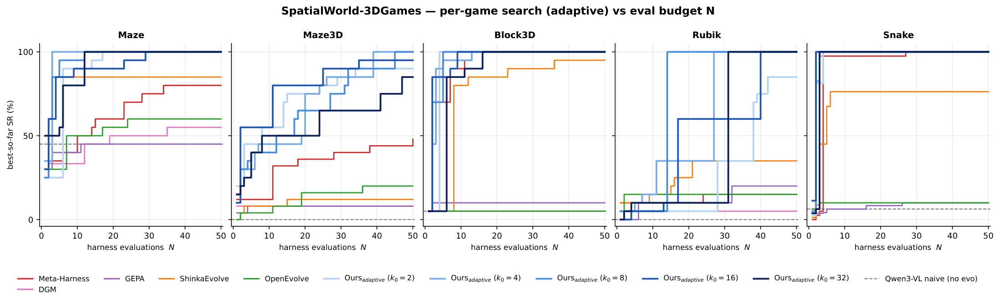
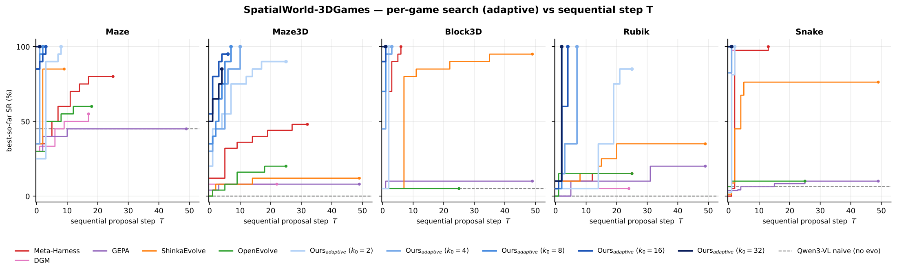
Figure 6. SpatialWorld-3DGames, per game: best-so-far success against the evaluation budget N (top) and the sequential step T (bottom). Snake and Maze are often solved during coverage initialization; Maze3D-Pro and Rubik are where the search runs long.
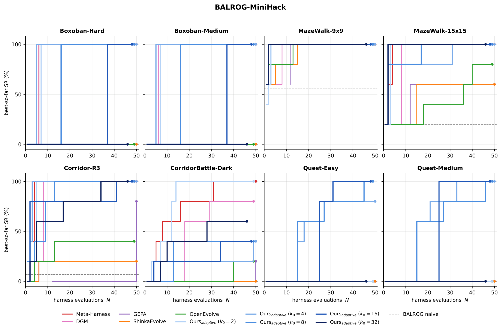
Figure 7. BALROG-MiniHack, per task. Boxoban separates the method families, CorridorBattle-Dark separates the leaders, and the two Quest tasks are solved only by Harness-MAP runs that discovered a dedicated quest module.
Evolution packs
Watch the harnesses evolve
The code release ships the paper's best run on each benchmark laid out harness by harness: the anchor, then every harness the run evaluated until the best score was first reached, each with the proposer's notes and the diagnostician's report, plus videos of the episodes those harnesses played. The charts below plot every evaluated harness in evaluation order, with the ancestry of the best harness highlighted. Click a harness to watch the episode it played.
The best MiniHack run (adaptive, k₀ = 16, 48 evaluations) evaluated 41 harnesses before reaching success 0.900 at evaluation 41. The path to the best is four harnesses long. The anchor (0.100) is BALROG's naive agent in the harness layout. cand_r35_0 (0.150) moved the decision from a per-turn model call to an in-episode value learner that asks the model only to break ties. cand_r41_0 (0.375) put a per-level chart with a BFS router in front of the learner. cand_r68_0 (0.900) rewired the learner onto an ordered stage table with tool owners for the Quest and Sokoban tasks and a frontier attractor in the router, edits the proposer was steered toward from two sibling cells.
Every harness above on MazeWalk-15x15 episode 00, the episode that separates the anchor from most of its descendants. Episodes are replayed in the MiniHack engine from the logged seed and action sequence, with the action, the agent's reasoning tag and the game message beside the map; every replay was checked step by step against the text observations the agent saw.
The four harnesses on the path to the best, side by side
Anchor top left, best bottom right, on the episode each task family was first unlocked by: MazeWalk-15x15, Corridor-R3 (first solved by cand_r35_0), Boxoban-Medium and Quest-Easy (first solved by cand_r68_0).
One adaptive run per game from the Claude-CLI sweep, laid out until the first harness that solved every level. Maze3D-Pro is the game with a real search: the anchor solves 2 of 25 levels and twelve proposals follow before cand_r6_1 solves all 25. Maze, Block3D and Snake saturate within the first few evaluations. The engine records every episode; each video is one level that the anchor fails and the best harness solves, so what changes between the videos is the sequence of decisions.
Anchor vs. best on level 7: the anchor (left) fails in 100 steps; cand_r6_1 (right) solves it in 37.
k₀ = 32 · 4 harnesses · score 1.0 first reached at evaluation 4 · level 12 shown
Anchor vs. best on level 12: the anchor fails in 50 steps; cand_r4_0 rebuilds the structure in 15.
k₀ = 8 · 2 harnesses · score 1.0 first reached at evaluation 2 · level 1 shown
Anchor vs. best on level 1: the anchor wanders for 100 steps; cand_r1_0 exits in 5.
k₀ = 2 · 2 harnesses · score 1.0 first reached at evaluation 2 · seed 20 shown · the five held-out seeds are also solved
Anchor vs. best on seed 20: the anchor dies after 3 steps; cand_r1_0 collects the food in 16.
k₀ = 2 · 3 harnesses · score 1.0 first reached at evaluation 3 · no engine recordings survive for this run, so the pack has no videos
SimWorld-MMNav, hard setting (adaptive, k₀ = 4, 16 evaluations): subtask success rises from 0.360 to 0.555 along the path anchor → cand_r6_0 (0.370) → cand_r9_0 (0.400) → cand_r13_0 (0.550) → cand_r15_0 (0.555). The evolved harnesses add modules such as road geometry, an arrival gate and a viewpoint controller to the ReAct baseline. On the ten held-out maps the best harness scores 0.567 over three replicate evaluations against 0.430 ± 0.033 for the anchor.
Anchor vs. best, re-run in the simulator on map 20_10, task dist_21_0_1, the one search task the best harness completed end to end during the search. In this re-run the anchor gives up after 11 steps about 590 m from the destination; cand_r15_0 keeps navigating for 135 steps and ends about 35 m from it.
Code
Run it on your own harness
The release at github.com/Harness-MAP/harness-evolution contains the method, the three benchmark configurations of the paper with their evolution packs, and the five baselines plus the two descriptor-swap ablations as budget-matched arms over pinned upstream clones. A benchmark plugs in through an anchor harness, an evaluator with a task split, a config file and an adapter; the search itself is never edited.
git clone https://github.com/Harness-MAP/harness-evolution.git
cd harness-evolution
pip install -e . # numpy, sentence-transformers, einops
python examples/toy/run_toy.py # the method end to end on a toy task, no GPU, no LLM, ~10 s
# the paper's three benchmarks, after editing the placeholders in each run.sh
MODE=adaptive K0=4 bash examples/balrog/run.sh
GAME=maze3d_pro MODE=adaptive K0=8 bash examples/spatialworld_games/run.sh
SETTING=hard MODE=adaptive K0=4 bash examples/simworld_nav/run.sh
# a published baseline on the same anchor, evaluator and budget
python baselines/run_baseline.py --config examples/balrog/config.json \
--anchor <ANCHOR_DIR> --baseline meta-harness --budget 50
qd/coverage.py, qd/archive.py, qd/modes.py: coverage-gated initialization, cells and breeding, the three resolution modes with budget accounting, ledger and resume
meta_agent/: proposer, judge and diagnostician skills over the Claude Code CLI, Codex CLI or any OpenAI-compatible chat API
examples/
run_benchmark.py: config + anchor + evaluator command → one search
balrog/, spatialworld_games/, simworld_nav/: the paper's configs, run scripts, setup notes and the evolution packs shown above
render/: episode logs → videos
baselines/
Meta-Harness, GEPA, DGM, OpenEvolve and ShinkaEvolve as arms over pinned clones
the two ablations: OpenEvolve over our CVT cells, and our loop over OpenEvolve's descriptor
one driver for every benchmark × arm pair, with the same anti-cheat gate and budget protocol
Citation
BibTeX
@article{yuan2026harnessmap,
title = {Harness-MAP: Budget-Efficient Harness Search via Structure-Token Factorization},
author = {Yuan, Mei and Chang, Yingshan and Fried, Daniel and Bisk, Yonatan},
journal = {arXiv preprint},
year = {2026}
}